ARLoop：用注意力残差选择性复用循环深度
ARLoop 研究循环 Transformer 如何利用反复执行同一组层所增加的计算量。Yuekun Yao、Yupei Du、Dawei Zhu 与 Huan Sun 的工作由俄亥俄州立大学牵头，合作机构为萨尔大学。论文于 2026 年 11 月 3 日首次提交，本文按 11 月 5 日访问的完整原文整理。论文入口：arXiv:2611.05234。官方代码仓库 已核验为公开可访问，代码、模型与训练配方的开放声明不等于本次已经独立复现其训练结果。
循环 Transformer 可以通过反复应用共享层增加有效深度，但标准残差把此前各层的信息不断累加到单一表示中，后续计算难以选择究竟应复用哪些中间结果。本文要回答：选择性访问历史深度是否能更有效地利用循环计算，以及这种访问是否真的需要保留完整残差历史。
1. 背景和问题
循环模型把扩展容量的一个维度从独立参数量转成重复计算次数。普通解码器每经过一层，通常使用一组新的注意力和前馈参数；循环模型则把相同物理层栈再执行若干遍。只要隐藏状态没有被清空，第二遍输入已经包含第一遍的处理结果，因此参数相同并不意味着输出相同。对参数存储受限、但允许多做计算的情形，这提供了有吸引力的选择。问题在于，参数复用本身只保证能多计算，不保证额外计算有效：如果后续循环主要复制、放大或抵消旧表示，展开出来的更深网络可能没有获得相应的能力。
作者把这个问题进一步定位到残差访问机制。标准 PreNorm 把子层产生的更新直接加入当前残差流，早期更新和近期更新在代数展开中都以单位系数保留。后面的层当然能够通过自己的非线性函数调整当前状态，但它接收到的是累加后的结果，无法直接把“第一遍某个模块的产物”和“第三遍另一模块的产物”作为不同来源进行选择。循环次数增大时，历史更新越来越多，同一个物理模块产生的多个版本混在一起。本文并未证明单位系数残差必然造成干扰，而是提出一个可检验的架构假设：显式暴露不同深度来源，让每一有效层学习聚合权重，可能比统一累加更能利用重复计算。
注意力残差原本就为普通 Transformer 提供了沿深度选择信息的办法。这里的“注意力”不是常见的序列位置注意力：序列注意力回答某个词应读取哪些上下文位置，深度注意力回答同一位置应组合哪些历史层表示。两者操作轴不同，不能把窗口深度理解成上下文窗口。ARLoop 的滑窗不会直接缩短输入序列，也不会把较早的文本从模型上下文删除。它限制的是每一有效子层能直接读取的残差源数量。这一点关系到应用判断：它解决的是循环网络内部的信息组织，不是长上下文检索问题，也不是 KV 缓存压缩方法。
为什么完整历史反而可能没有必要？循环架构的各遍计算共享权重，作者观察到相隔若干循环的残差块具有较高相似性。较新表示已经受到更多轮处理，可能保留了旧来源中有用的信息。若后续层主要选择近期块，那么保留所有旧块会增加访存与聚合成本，却未必提供独立信息。这个直觉不能单凭相似度就成立：两个表示方向接近，仍可能在任务关键维度上不同；较新表示也可能遗失必要信息。因此作者把全历史与滑窗作为两个真正训练的模型变体比较，而不是只对注意力热图进行事后解释，再把“高相似”直接等同于“可以安全删除”。
本文的另一个动机是已有循环模型研究与实际语言能力之间的距离。许多残差改造先在小规模、单一预训练来源上验证困惑度；这能比较训练稳定性，却不足以保证数学解题、程序生成等复杂任务受益。一个更低的平均下一个词预测损失可能来自高频语言模式，而非更好的多步推理。作者因此安排两个层次的证据：先在一亿到数亿参数模型上控制预算、比较残差设计，再把方案放到混合网页、数学和代码的实际预训练配方中，训练六亿和十二亿参数模型，检验改善能否迁移到生成式任务。
这里需要区分三种“效率”。参数效率表示在较少独立权重下达到某种质量；计算效率表示消耗相同训练或推理计算时质量更好；系统效率表示真实硬件吞吐、显存或延迟更好。共享层显然减少某些权重存储，但重复执行会增加每个 token 的计算，额外的深度注意力也需要读写历史表示。ARLoop 的主张主要是更有效地利用循环深度，并未承诺相对 PreNorm 免费提质。论文单卡测试恰好显示滑窗变体仍有吞吐损失。因此阅读时应把质量收益和实现开销一起看，不能把“参数更小”换算成“线上响应更快”。
还有一个容易被标题吸引而忽略的边界：循环网络可以在训练时选择较大循环次数，与训练后随意多循环几次，是两个问题。前者在优化过程中学会使用对应有效深度；后者要求模型把已学的迭代机制推广到未见深度。ARLoop 为每个展开深度配有专属查询参数，因此超过训练深度时甚至要处理新查询如何获得的问题。作者确实研究了外推，但结果是负面的。本文值得关注的贡献恰好包含这个区分：有选择的残差读取能改善已训练深度的使用，却没有自动提供可无限增加推理计算的机制。
比较对象的选择同样影响问题定义。Sandwich Norm 通过额外归一化控制残差流，DeepLoop 调整跳连尺度与初始化，Parcae 在循环间引入稳定状态转移和输入注入。它们分别约束数值传播、残差幅度或循环状态，而 ARLoop 直接改变读取历史来源的方式。作者并没有把这些机制统合为一个全新理论，也没有证明注意力读取在所有优化条件下更优；实验是在统一实现下检验何种信息组合更有效。因此，理解本文时应保留基线各自试图解决的训练困难，而不是把它们简单视为已经被替代的旧架构。读者若在另一套循环模型上比较，也应给归一化、初始化和输入注入相同的调参机会，避免把不稳定训练误判为表达能力不足。
对推荐研究者来说，ARLoop 的直接实验对象不是召回、CTR 或列表排序。它更接近一种可供未来生成式推荐骨干探索的结构选择：在词表或语义标识符解码模型里，共享层和深度选择可能改变质量与参数预算的关系。但论文没有推荐数据集结果，没有用户历史稀疏性分析，也没有线上用户指标。更合理的迁移问题是，在固定服务延迟与训练预算下，循环结构能否提升个性化建模，而不是先假定数学基准上的改善会变成点击收益。下文保留这些证据界限，把方法机制、受控比较、实际预训练以及失败边界分别说明。
2. 方法
2.1 从单位系数残差到循环深度
先按论文的术语分清子层、Transformer 层和残差块。一个 Transformer 层含注意力与前馈两个子层；残差块则是把若干相邻子层的更新打包成一个深度注意力来源，二者数量未必一致。设输入序列嵌入为隐藏矩阵，PreNorm 子层先归一化当前表示，再做注意力或前馈变换，最后加回原表示。原文式一写为：
符号解释：$h_i$ 是第 $i$ 个子层后的序列表示，$f_i$ 为该位置的注意力或前馈函数，$\operatorname{Norm}$ 为归一化。加法左右两项都在相同表示空间，跳连保证旧信息能直接传递；代价是从展开式看，历史更新没有可学习的独立权重。这里的 $i$ 不是生成位置，也不是 token 编号，而是有效计算深度。论文后面的查询同样随有效深度变化，避免把共享层数与专属聚合器数混淆。
若一套物理层栈含 $L$ 个 Transformer 层，其整体映射记为 $\mathcal S$，循环 $R$ 次的输出可以写成原文循环定义的紧凑形式：
符号解释：$h_0$ 为输入嵌入，$y$ 为输出 logits，$\operatorname{LMHead}$ 是语言建模头，$R$ 是循环次数。展开后有 $2LR$ 个子层执行位置，但注意力和前馈主干只有 $2L$ 组独立物理子层参数。输入第二遍的是第一遍输出，因而每遍所处理的状态不同。本文始终循环完整栈，没有研究只循环中间若干层的变体，也没有引入为不同样本动态决定停止时机的控制器。
这一设置让残差源的选择成为独立于主干参数共享的设计维度。对同一物理注意力层，第一遍可能更多依赖词嵌入，后续遍可能更依赖刚完成的高层更新。如果所有循环共用一个深度查询，会强迫不同角色使用相同聚合偏好；本文为每个有效子层配置自己的查询和归一化参数，主干权重共享，但选择历史来源的参数不完全共享。因此参数效率应理解为主要 Transformer 权重得到复用，而不能写成不同循环的所有参数逐项相同。
2.2 块残差上的深度注意力
ARLoop 先保留各子层更新，再沿残差来源轴做加权组合。原文式二和式三对应下面两个步骤。令输入嵌入也作为第零个来源：
符号解释：$z_j$ 是第 $j$ 个子层产生的更新，$q_i$ 是第 $i$ 个有效深度的可学习查询，$\alpha_{i,j}$ 是在可见来源之间归一化后的权重。查询不需要把所有深度向量串接后送进一个大网络，而是用归一化来源与查询的相容程度分配读取比例。此处归一化主要用于打分，保留来源本身作为被加权的值；不能把键和值都替换为同一个归一化向量来理解。
符号解释：$h_i$ 是供后续子层使用的聚合表示，第一项是直接读取输入嵌入，其余项是历史子层更新。权重依赖深度查询与当前序列的来源表示，因而可以随内容改变。与单位系数加法相比，它显式允许某个来源只占很小比例，或把读取集中到少数近期来源。它仍然是联合预训练的一部分，论文没有为这些权重设置外部标签，也没有单独的“选择正确残差”监督任务。
如果每个子层都成为一个独立来源，来源集合会随有效深度线性增长。作者沿用块注意力残差，把连续 $S$ 个子层更新求和作为完整块：
符号解释：$b_k$ 是第 $k$ 个残差块，$S$ 是每块包含的子层数。块内保留加法积累，块间才用注意力选择；输入嵌入和当前尚未闭合块的部分和同样作为可用来源。这样无需把每个子层更新永久作为独立源读出。块大小是效率与分辨率之间的折中：大块减少来源数，却把块内细节先行混合；小块给予更细选择，但增加状态读取与聚合工作。附录块大小实验没有显示越细越好，本文默认配置是经验选择。
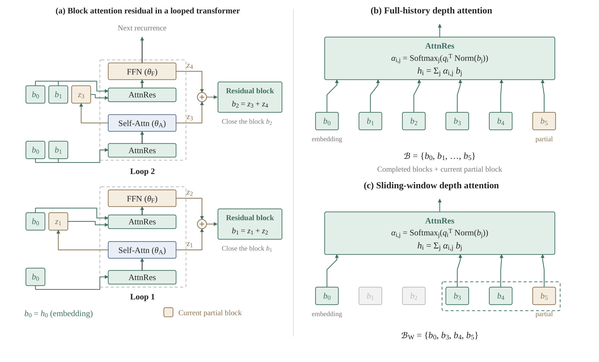
图二左侧用每遍只有一个注意力加前馈层的简化网络解释执行顺序。两遍中的注意力和前馈分别共享同一组参数，但每次执行之前都有一个残差来源聚合操作。第一遍的两个更新闭合成第一个块，第二遍的两个更新形成下一块；当前块尚未完成时，已经产生的部分和也能参加后续读取。这保证模型不是必须等整遍结束才交换信息，而是每个有效子层都能选择当前可见来源。右上部分展示全历史版本，输入嵌入以及所有已完成块和部分块一起进入聚合器；右下部分用虚线框突出近期窗口，灰掉的旧块不再被直接访问。图中的原始嵌入始终保留，所以窗口不能解释为只记住最后几层、完全失去初始输入。箭头表达的是同一 token 位置沿深度的信息流，图里没有新的跨 token 检索模块，也没有把每遍输出拼接成更长文本。这张图与公式合起来说明，ARLoop 修改的是每次共享模块接收的表示，而非把共享主干替换成不同专家或另一个大模型。对实现而言，闭块与部分块的边界必须准确，否则会重复计入更新或读取未来子层，改变论文所定义的计算图。
2.3 滑窗、查询参数与实际预训练
全历史块注意力仍然随着循环变深增加来源。ARLoop 的进一步取舍是让每次读取始终保留输入嵌入，并只直接访问最近若干残差块。按原文第三点二节定义：
符号解释：$b_0$ 表示嵌入来源，$m$ 是当前可见的最近来源编号，$W$ 为保留的近期块数，$\mathcal B_W$ 为注意力实际读取的集合。即便最早的完整块移出直接读取集合，其影响仍可能已经融入近期块；这与把历史计算全部回滚或删除不同。默认深循环设置使用最近三个块加嵌入，小循环则使用全历史。窗口是残差深度窗口，与文本上下文长度二千零四十八或四千零九十六分别控制不同资源。
小规模受控模型在一亿四千万参数时每六个子层闭成一块，在三亿七千万参数时每十二个子层闭成一块，两个尺度每次循环都是两个残差块。训练采用固定循环次数，并在不同循环数上分别训练模型。实际预训练改用 GQA 和 SwiGLU，扩展到四千零九十六上下文，仍然按既定循环深度进行普通语言建模预训练。架构新增的是残差聚合机制，不是额外的强化学习目标。论文把数据、配置、模型与代码开放，意在让循环骨干研究可以在相同配方上继续比较；对开放状态的判断仍应以各工件实际可获得性分别核验。
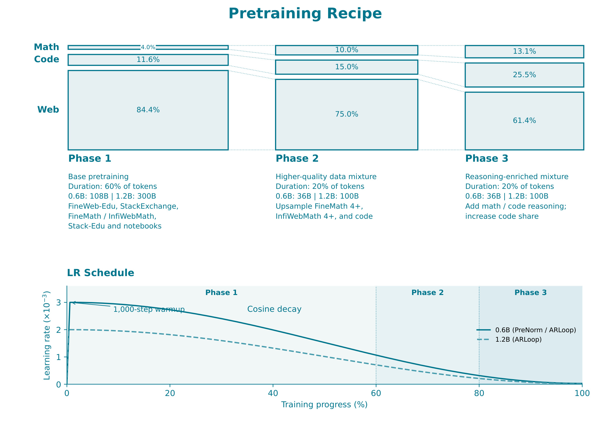
图七上部给出实际预训练的三个阶段：网页、数学和代码域并非一开始就以固定比例混合到结束。第一阶段占总 token 预算六成，后两阶段各占两成；六亿模型对应一千零八十亿、三百六十亿、三百六十亿 token，十二亿模型则对应三千亿、一千亿、一千亿。数学占比从百分之四升至百分之十，再升至百分之十三点一；代码从百分之十一点六升至百分之十五，再升至百分之二十五点五，网页占比相应下降。下方学习率曲线还标出一千步热身和向峰值百分之一的余弦衰减。因而“只训练零点五万亿 token”并不是一个足以完整描述模型训练的条件，后期数据质量和域混合本身会影响数学与代码能力。对于同为六亿参数的两个自训练模型，这套配方被保持一致，有助于辨别残差设计；对于外部模型，原始数据来源、阶段安排和学习率并不统一，不能据此把跨模型差距完全归因到滑窗深度注意力。图中连线连接的是域配比变化，并不是主任务准确率曲线，不能把网页占比下降看成网页能力下降的实测证据。
3. 实验结果
3.1 小模型受控比较：质量改善与局部性的边界
受控实验使用 FineWeb-Edu，一亿四千万模型训练一百一十二亿 token，三亿七千万模型训练二百九十六亿 token，序列长度为二千零四十八。主要语言建模指标是约一千万 token 保留集上的困惑度，越低越好；下游平均值来自多个常识、知识和阅读任务，部分使用长度归一化准确率，部分使用普通准确率。作者在统一架构和训练设置中实现 PreNorm、Sandwich Norm、DeepLoop、Parcae 等方法，但学习率按方法调节，因此“统一”不等于每项超参数完全相同。更稳妥的理解是给不同残差方案相近的训练机会，而不是有意把所有方案绑定到一套可能不适合它们的学习率。
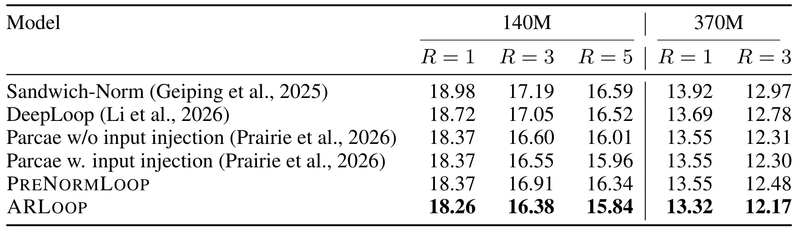
表一按照参数规模和循环次数分列，避免把更深循环的改善误认为残差方案的单独贡献。一亿四千万参数、循环三次时，PreNorm 的困惑度为十六点九一，ARLoop 为十六点三八；循环五次时分别为十六点三四和十五点八四。同样值得比较的是更强的 Parcae 输入注入版本，它在循环三次和五次时为十六点五五和十五点九六，ARLoop 依然较低，但优势比相对 PreNorm 更小。三亿七千万参数、循环三次时，PreNorm 为十二点四八、Parcae 输入注入为十二点三零、ARLoop 为十二点一七。这里所有列都由 ARLoop 取得最低困惑度，支撑其跨预算的稳定改善，但表里没有种子置信区间，不能把最小的百分之一差距描述成统计显著。循环一次时已有小幅收益，说明注意力残差的一部分作用并不依赖重复多遍；循环加深后差距扩大，才更贴近本文“更有效利用循环深度”的主要论点。
另一点是，列标题中的循环次数只改变展开执行深度，不增加同一模型的物理主干层数，因此横向改善涉及额外计算，不能当成完全相同计算量的免费收益。
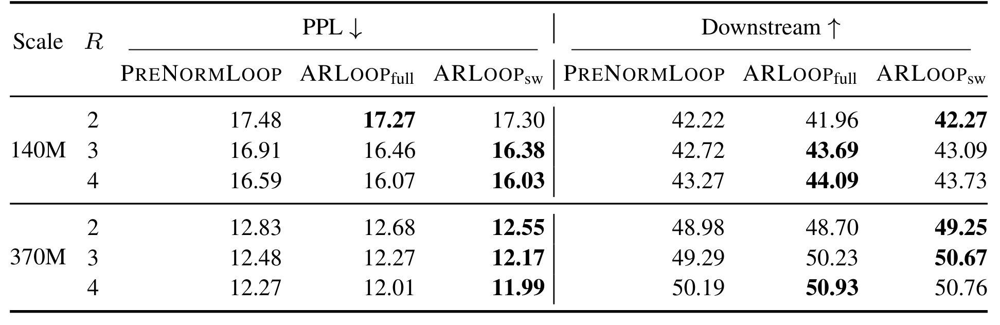
表二把同一个注意力残差设计拆成全历史和滑窗，左半边是困惑度，右半边是下游平均准确率。这两组指标有时给出不同偏好：一亿四千万参数、循环三次时，滑窗困惑度十六点三八优于全历史十六点四六，但下游均值四十三点零九低于全历史四十三点六九；循环四次也有类似情况。三亿七千万、循环三次时，滑窗既把困惑度降至十二点一七，也把下游均值提高到五十点六七，优于全历史五十点二三。浅循环的一亿四千万模型中，全历史困惑度十七点二七还略好于滑窗十七点三零。这说明论文支持“深循环下可以匹配或改善、且成本较低”，而不是所有尺度、所有任务都应删除旧源。对工程选择，困惑度最优和下游任务最优需要分别报告，不能只取其中一个有利指标来宣称滑窗严格支配全历史。
例如三亿七千万、循环四次时，全历史下游五十点九三仍高于滑窗五十点七六，尽管滑窗困惑度更低；这条不一致应与优势一起保留。
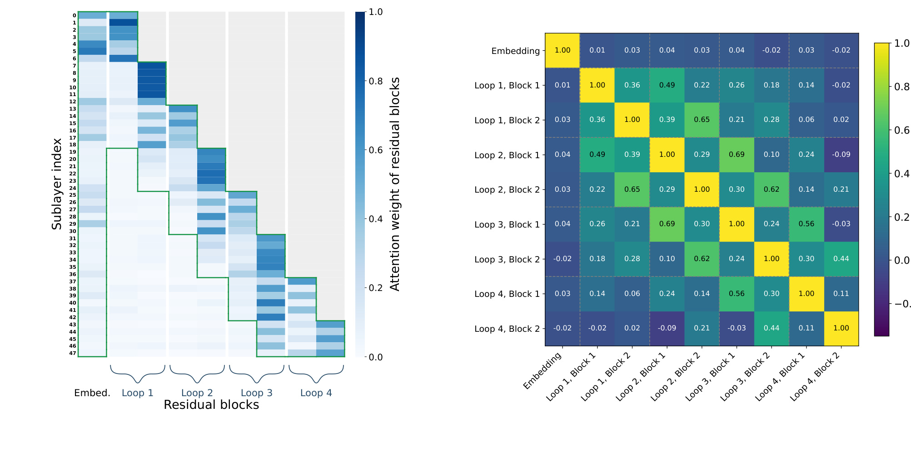
图三左侧每一行是一个有效子层，对应列是嵌入及此前残差块；较深的蓝色表示更大的注意力权重。绿色框不是另一个实验模型的输出，而是标出滑窗版本会保留的近期块加嵌入。可以看到许多深层读取集中在靠近对角线的近期来源，作者给出的例子是在最后一个有效子层，近期三个块和嵌入合计获得百分之九十六的权重。右侧的余弦相似度矩阵显示，不同循环中对应块具有较高相似性，支持重复主干产生冗余来源的解释。这里有两个证据等级：热图展示模型实际如何分配读取，余弦相似度展示表征方向关系，真正证明窗口删除可接受的仍是表二的重训质量比较。不能因为某个旧块平均权重低就断言它对每个输入都无用；验证集平均也会掩盖少数困难样本的远距读取。因此这组图适合提出局部读取的机制解释，不能取代任务级反例检查或把相关性写成充分因果证明。
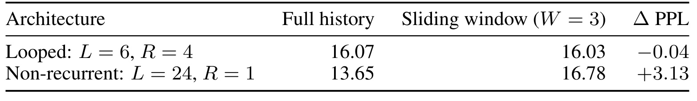
表九提供一个非常重要的对照：六个物理层循环四遍，与二十四个独立层只执行一遍具有相同有效深度和隐藏宽度，但独立参数量不同。在循环模型中，全历史到滑窗的困惑度从十六点零七变成十六点零三，仅小幅改善；非循环模型则从十三点六五恶化到十六点七八，增加三点一三。这个结果说明近期窗口的适用性与参数共享带来的表征冗余有关，不能把 ARLoop 的经验直接搬到普通深层 Transformer。与此同时，这个对照没有匹配独立参数量，所以不能反过来说非循环模型本来更强就是某种归一化机制的优势。它回答的是在各自架构内移除直接远程深度读取会发生什么，强调架构条件对信息删减的影响。实际迁移时，应先检验新的骨干是否也有相近的跨循环冗余，而不是看到窗口能省访问就默认质量安全。
二十四层非循环模型保留更多独立参数，数据和有效深度匹配只排除了部分混杂，尚不足以用绝对困惑度比较两种架构的参数效率。
3.2 大规模预训练与任务迁移：同尺度证据更有解释力
实际预训练中，六亿模型使用十八个物理 Transformer 层、三次循环和一千八百亿 token；十二亿模型使用二十四层、三次循环和五千亿 token。作者对外部模型使用相同评测 harness 重新评测 base checkpoint，并明确它们主要作为参照，不是匹配训练数据的头对头实验。常识任务、数学和代码任务也有不同评测设置：部分常识任务采用 few-shot，数学用贪心生成与指定答案评判，MATH 是完整五千题，代码采用原始 EvalPlus 流程。因而这不是统一计算一个任意平均分后就能说明所有能力的实验，应该逐项看任务和训练预算。
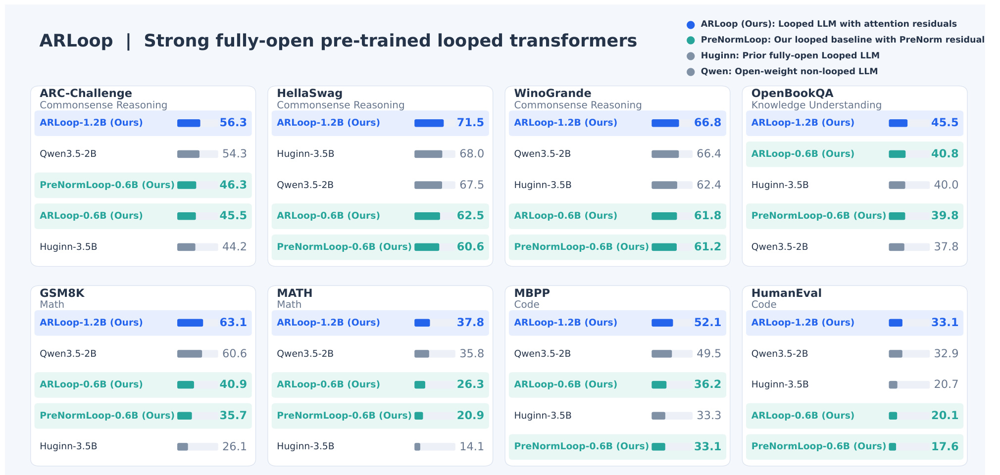
图一把八个任务拆成独立面板，最有价值的是能直接看到六亿参数自训练对照中的例外。ARLoop 在数学和代码的条形长度明显高于同参数 PreNorm，但在 ARC-Challenge 上四十五点五低于四十六点三。因此“七项改善”准确，而“所有任务均改善”不准确。十二亿参数模型在这八项上超过图中 Huginn 和 Qwen 参照，但它的训练量、数据配比、循环次数与这些模型不同；图形视觉上的领先不是对架构因素的单变量归因。不同面板的任务尺度也不一样，不能把柱长差直接加总为一个统一收益。它适合展示结果组合及大小模型间的能力演进，原始数值和预算还需回到表三一起阅读，尤其要把最大模型的可用能力与受控消融的证据力度分开判断。
图例中的“开放权重”和“完全开放”分别强调可用工件范围，它们不是任务性能等级；作者把训练配方和中间模型的开放也视作研究贡献，但图本身不审计工件完整性。
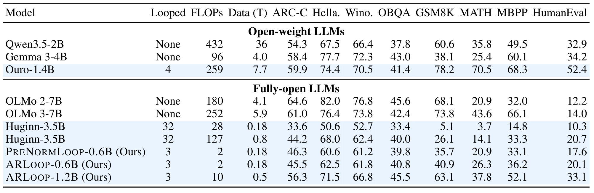
表三的同尺度两行提供最清晰证据：六亿 PreNorm 与 ARLoop 都训练一千八百亿 token、循环三次，GSM8K 从三十五点七升至四十点九，增加五点二个百分点；MATH 从二十点九升至二十六点三，增加五点四个百分点；MBPP 从三十三点一升至三十六点二，增加三点一个百分点；HumanEval 从十七点六升至二十点一。四项常识与知识任务中有三项提高，ARC-Challenge 下降零点八个百分点。十二亿模型的 GSM8K 六十三点一、MATH 三十七点八和 HumanEval 三十三点一，说明该配方可以训练出具有实际数学与代码能力的循环模型。与 Huginn 更大参数和更多循环的比较展示了有竞争力的结果，但不同数据量、数据质量和优化配方使归因复杂。表中 FLOPs 还是基于近似公式的训练计算估计，并不是实测能耗、GPU时或服务时延。尤其十二亿尺度没有对应的十二亿 PreNorm 自训练行，不能把最大模型的全部提升都归结为注意力残差。
此外，Ouro在多数任务仍领先十二亿ARLoop，表中明确给出其更大数据预算，这进一步说明本文不是在所有开放模型上取得全面最优。
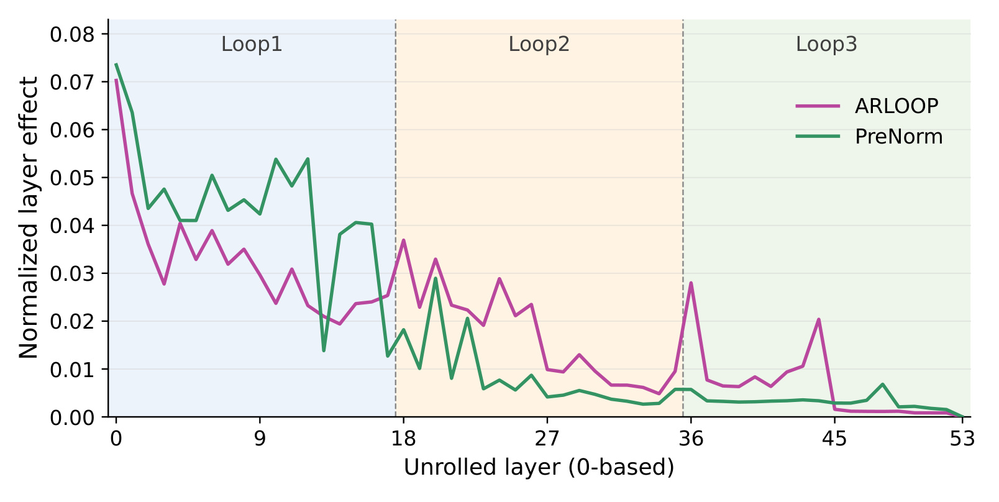
图四的横轴是展开后的 Transformer 层编号，三段底色分别对应第一、第二、第三次循环；纵轴是归一化层效应。作者在五十个 MATH 样本上干预某一层表示，再看后续层输出变化，以衡量该层对后续计算的影响。ARLoop 在第二和第三次循环的曲线普遍高于 PreNorm，尤其后部有若干明显峰值，与后续循环被更充分利用的解释一致。由于每条曲线经过各自归一化，不能把某一点的高度当成直接可比较的绝对任务贡献，更不能把第三遍曲线更高换算成答题提升多少。样本量也只有五十，附录在 MBPP 上提供类似诊断，但这仍是局部机制证据。它补强了主任务表现背后的合理解释，却没有识别哪个块独立造成全部质量差距，也不意味着第一遍低于 PreNorm 的区间就完全无用。对架构调试，值得借鉴的是干预而不只看注意力权重；对性能宣传，则应保留小样本和归一化的限制。
这里干预后的表示差异是内部测量，不是由用户完成任务所定义的外部奖励，二者不能互换。
3.3 训练效率与条件依赖：窗口的成本并未消失
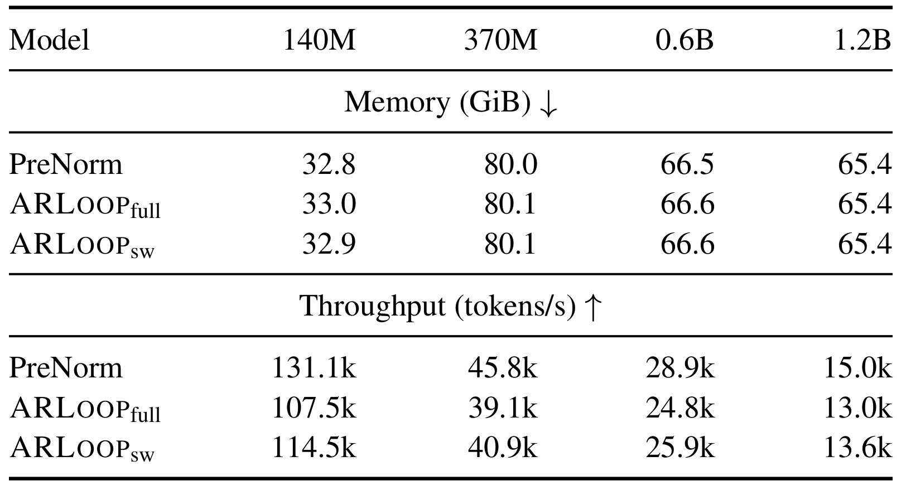
表四在单张 H100、循环四次的配置下同时报告显存与 tokens 每秒。不同尺度分别用不同 batch，因此它主要支持同一列内方法比较，不适合把不同列吞吐直接解释为缩放规律。六亿模型从 PreNorm 的每秒二点八九万 token，降到全历史二点四八万，滑窗恢复到二点五九万；十二亿尺度则是每秒一点五万、一点三万和一点三六万。滑窗确实减少了全历史的成本，但仍慢于普通残差。显存变化很小，因为测试没有启用激活检查点，训练反向传播本来就要保留很多中间状态，所以增加残差来源的边际开销有限。这个条件不能外推到开启检查点或推理解码的场景。论文给出平均约一成的吞吐损失，与新增算术相对少、但高带宽显存流量增加的解释一致；它没有提供完整生产服务延迟，不能写成推理免费提质。模型选择时，应把额外训练成本与数学代码收益放在同一个预算框架下重新衡量。
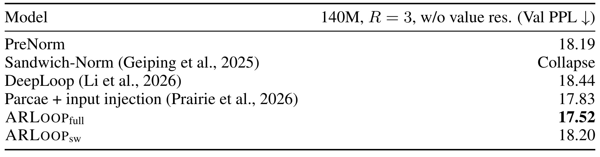
表七把一个常被忽略的基础组件去掉：原本各方法都采用门控的 value residual，在交替有效层向注意力值向量注入 token 相关嵌入。去掉这一组件后，一亿四千万参数、三次循环的 PreNorm 困惑度十八点一九，全历史 ARLoop 为十七点五二，滑窗为十八点二零。也就是说，全历史版本仍领先，但默认滑窗几乎退回甚至略差于 PreNorm；Sandwich Norm 在该设置下发生训练崩溃。这个消融提醒我们，窗口有效并不只是“旧块冗余”一个因素，持续的 token 信息注入会影响表示是否塌缩，以及局部读取能否维持质量。作者明确值残差不是本文贡献，统一对照都启用它，因此不能据此否定主结果，但迁移时必须复现这一底层设置。若在另一套骨干上移除嵌入注入却保留三个块窗口，得到退化并不一定表示注意力残差失效，而可能是原有组件间依赖被改变。表里只有一个规模和循环数，也不能把依赖程度推广到所有大模型。
这两组成本与消融证据使论文的使用方式更具体：它并非一个只替换残差公式就保证收益的独立插件，而是与初始化、值残差、块大小、窗口、学习率和训练深度共同构成方案。作者统一实现先前基线并作学习率搜索，降低明显的调参不公平，但并没有穷举每种方案的所有组件组合。未报告的随机种子方差和完整硬件profiling也限制了非常细小差距的判断。复现时应先保留同尺度对照与基础组件，再把目标硬件上的访存开销纳入，而不是只追逐表三最大模型的一组分数。
3.4 动态循环和外推边界：更好的读取不等于无限思考
固定循环与动态循环训练的区别在于每个样本或每个 batch 是否随机选择执行遍数。附录使用截断的泊松采样：
符号解释：$\widetilde R$ 为原始泊松随机数，$R$ 是真正执行的循环次数，始终限定在一至四。每序列采样和每batch采样在算力消耗上不同，作者为后者增加训练token以匹配总训练FLOPs。因而不能仅按token数量判断谁训练更多，更不能把动态训练的较差结果说成作者故意给其少算力。
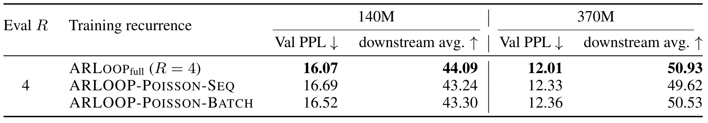
表十五在评测都执行四次循环时比较三种训练方式，且这里使用全历史注意力，不是主结果的默认滑窗。固定四次训练在一亿四千万模型上困惑度十六点零七、下游四十四点零九；按序列采样为十六点六九、四十三点二四，按batch采样为十六点五二、四十三点三零。三亿七千万尺度也由固定深度取得较低困惑度和较高下游均值。这个结论的范围是“在给定评测深度和测试过的训练配方下，固定深度更好”，而非动态训练没有用途。动态训练能支持按请求改变执行深度，具有质量均值之外的预算灵活性；论文也没有测试所有动态分布、课程或退出策略。对服务系统，固定深度比较适合稳定预算，动态深度则可能服务不同难度请求，最终应该在延迟分布与质量曲线上评估，而不能只取四次循环的单个终点。
更高下游均值也未给出逐任务一致性保证，表中平均值应与受控协议一起使用。
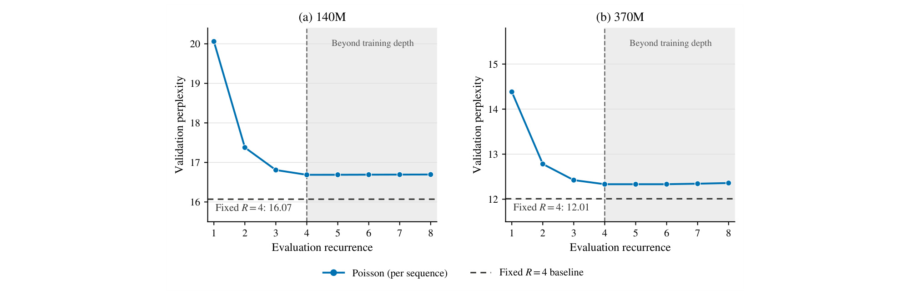
图十把同一个按序列泊松训练的checkpoint在一到八次循环下评测，竖虚线四次是训练中见过的最大深度，灰区代表真正外推区间。两种尺度的困惑度在一至四次阶段下降，但进入灰区后基本持平，没有继续获益。水平黑虚线只是另一个固定四次模型的参照值，并不是固定模型也沿一至八次做了同样扫描。更有意义的是，作者并没有直接用随机新查询让模型失败：超过已见深度时，新增查询单独使用额外五亿FineWeb-Edu token优化，其他参数冻结，已为深度聚合创造相当有利的条件。即便如此，额外循环仍未改善困惑度。这支持“选择历史表示”和“学会跨未见迭代步继续改进状态”是不同能力。它没有证明任何循环模型都不能外推，也没有在数学或代码上测试一套完整自适应推理方案，但足以阻止把本文解读为可在部署时任意多循环、自动换来更强推理的证据。
4. 总结
4.1 我的判断与可迁移价值
ARLoop 最可信的贡献，是把循环模型的残差组织从被动累加改成显式、可学习的深度选择，并通过受控小模型与实际预训练两层证据说明这种选择有价值。论文没有只给最大模型成绩：全历史与滑窗比较、非循环反例、值残差消融和深度外推失败共同限定了结论。尤其六亿模型相同数据量、相同循环和同一配方下七项任务改善，是比跨模型排行榜更有解释力的证据。数学与代码的增益大于部分常识任务，也提示困惑度和选择题均值不能覆盖全部生成式能力。
对大模型工程，值得迁移的是把“再执行一遍”分解成两个问题：共享计算如何产生新状态，以及后续层如何访问这些状态。ARLoop主要处理后者，不能替代前者所需要的迭代训练目标。对生成式推荐，若希望在参数存储预算内提高用户序列建模能力，可以把它作为骨干候选，但必须在固定训练算力和线上时延下比较，不应直接照搬数学收益。对于长序列用户兴趣，深度滑窗与时间历史截断是两回事；论文没有说明长期兴趣应保留多久，也没有推荐系统里的冷启动或热门偏置证据。
4.2 局限与后续跟进
第一，最强十二亿模型没有同规模同配方PreNorm对照，参数、数据和架构的缩放收益尚未完全拆开。第二，多个表没有给出跨随机种子的置信区间，小幅困惑度或准确率差距不应被解释为稳定显著优势。第三，单卡吞吐实验没有开启激活检查点，也不是实际解码服务，额外状态管理在其他硬件和并发下的成本未被证明。第四，滑窗与值残差存在明显条件依赖，删去基础组件后默认变体会失去部分优势，因此迁移不能只复制窗口大小。第五，层效应来自每任务五十个样本、各曲线归一化的诊断，支持机制解释但不能定量归因全部质量增益。第六，本文没有取得循环外推成功，也没有自适应退出或推荐线上业务结果。
后续首先应复现六亿同预算对照，同时记录数学、代码和ARC负向项，确认改善并非由评测模板或数据差异造成；这比直接扩大到更大模型更能验证机制。其次可在目标硬件上分离深度注意力、访存和共享栈执行的成本，分别报告训练吞吐、首token和每token延迟，避免参数效率替代服务效率。第三，应联动测试值残差、块大小和窗口范围，并保留非循环对照，确认局部访问适用于新的骨干而非只适用本文配方。第四，如探索生成式推荐，建议把用户长短期建模、语义标识符生成质量与固定延迟约束一起纳入，明确这是新的待验证研究问题。第五，若跟进推理时扩展，应寻找真正让状态在未见迭代步持续改善的训练方案，而不是把新增深度查询训练好就视为外推机制已经解决。
这份笔记把作者报告与个人迁移判断分开：已核验的是公开论文中的设定、图表、公式和结果，未在本地重跑预训练或独立复现实验。开放仓库提供了进一步验证的入口，但公开可访问本身并不消除训练数据、预算和复现难度。对当前工作最可执行的启发，是在相同预算下检验残差读取如何改变有效计算质量，并完整保留失败边界。